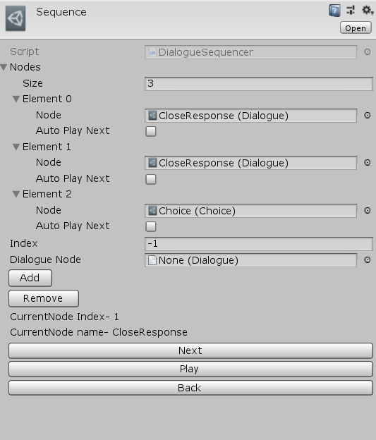
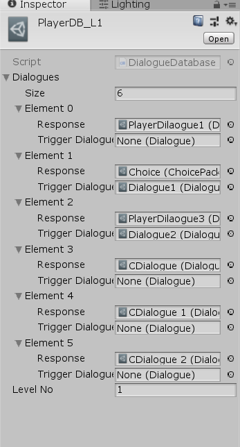

Dialogue system
This Dialogue system is used to facilitate conversations in the game between player and NPCs .The system is completely based on scriptable object architecture, coupled with delegate pattern(Events and sets). This system also lets the player make choices and has branching features. The system comes with the feature to setup subtitles to match the offset of the clips.
Brief
The building block of the system is a Node, a node could be :-
- Dialogue
- Choice
The system is classified based on sequential dialogues and relational dialogues.
Sequential system
Sequential system uses a dialogue sequencer class to traverse through a list of the predefined dialogue sequences or choices. The head of the sequencer moves as you invoke play(similar to a list traversal).
Relational system
This model uses direct relation between the dialogue caster and receiver instead of linear sequences which means there could be infinite no of branches or routes during the conversation. Here, each character has its own database which holds the collection of possible dialogues or choices he/she could make. Each node has a header packet, which contains who is it casting the dialogue to and awaits for a response. Each conversation is uniquely identified by Conversation header/ start node.
Below is a character database for specific level
